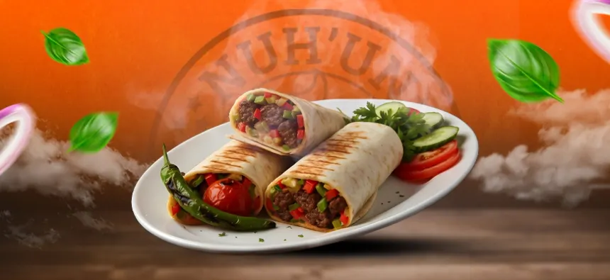
Adana Dürüm
Zırh kıymasıyla hazırlanan, özel baharatlarla harmanlanmış geleneksel Adana kebabı; közlenmiş
domates, biber ve sumaklı soğan salatası eşliğinde, taze pişmiş sıcak lavaşa sarılarak servis
edilir.

Özel Kasap Burger
Özel dinlendirilmiş dana köftesi, karamelize soğan, cheddar peyniri ve çıtır marulun muhteşem uyumu.
Yanında baharatlı patates kızartması ile servis edilir.
.jpg)
Tavuklu Fettuccine Alfredo
Taze krema, mantar ve parmesan peyniri ile hazırlanan İtalyan usulü fettuccine makarnası;
üzerinde ızgara tavuk dilimleri ve taze fesleğen ile sunulur.
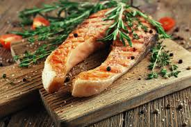
Izgara Somon
Bebek patates ve kuşkonmaz yatağında, ağır ateşte mühürlenmiş taze somon fileto.
Limonlu ve dereotlu özel sosuyla hafif bir akşam yemeği tercihi.
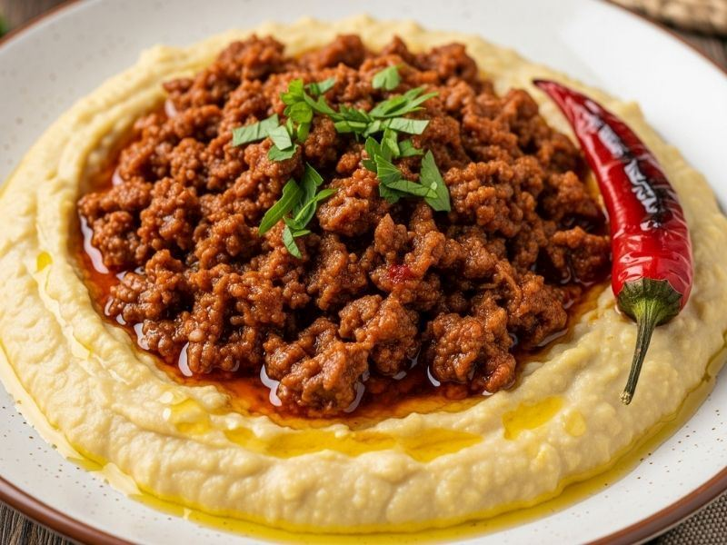
Hünkar Beğendi
Közlenmiş patlıcan ve beşamel soslu yatağın üzerinde, ağır ateşte pişmiş yumuşacık dana kuşbaşı
etleri.
Saray mutfağının en seçkin lezzetlerinden biri.
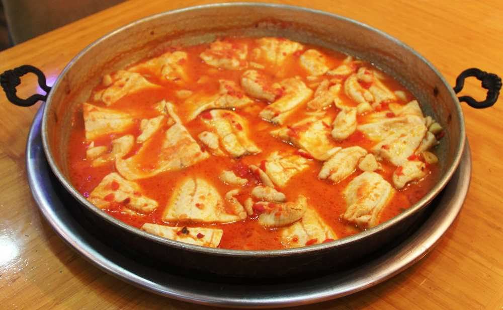
Levrek Buğulama
Mevsim sebzeleri, defne yaprağı ve tane karabiber ile fırında kendi suyunda pişen taze deniz
levreği.
Besleyici ve son derece sağlıklı bir seçenek.
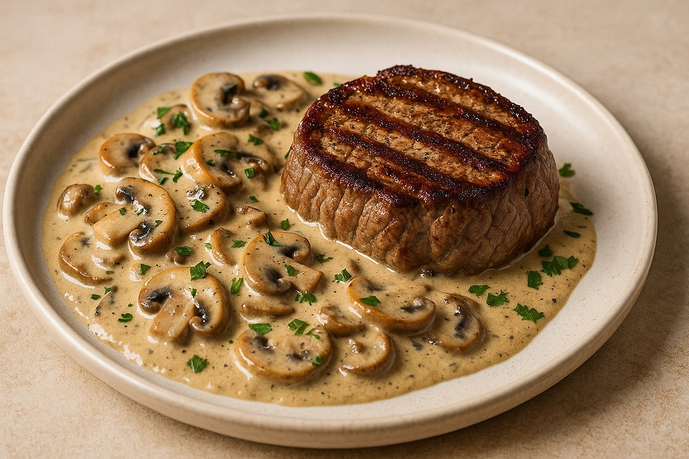
Mantar Soslu Dana Biftek
Tercihinize göre pişirilmiş dana biftek dilimleri, üzerinde kremsi mantar sosu ve yanında
tereyağlı sebze sote ile doyurucu bir ana yemek.
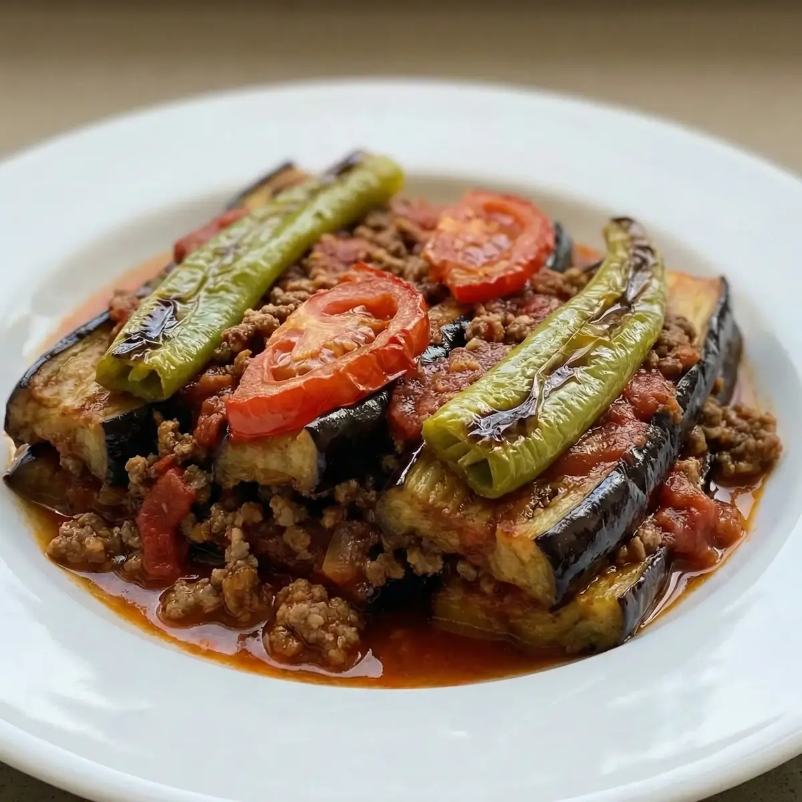
Patlıcan Musakka
Hafifçe kızartılmış patlıcanların, domates soslu kıyma harcı ile fırınlanmış geleneksel hali.
Yanında tereyağlı pirinç pilavı ile servis edilir.
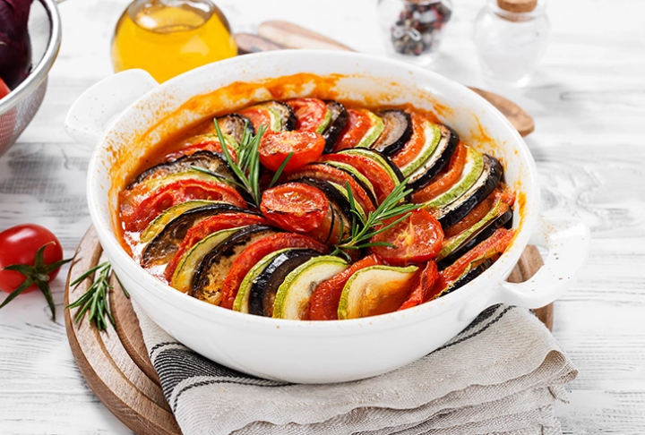
Sebzeli Ratatouille
Kabak, patlıcan ve domates dilimlerinin taze baharatlarla harmanlanarak fırınlandığı,
görsel olarak da iştah kabartan Fransız usulü sebze yemeği.
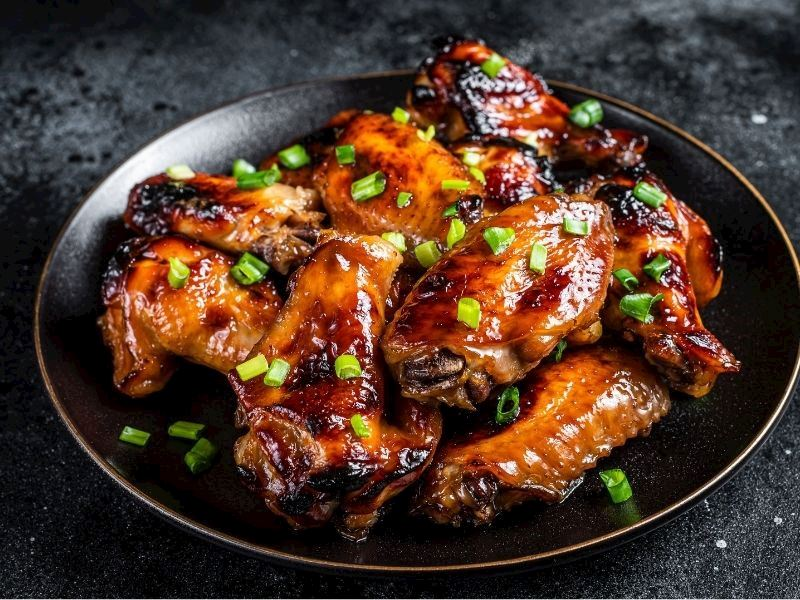
Teriyaki Soslu Tavuk
Wok tavada sotelenmiş tavuk göğsü parçaları, üzerinde parlak teriyaki sos, susam ve taze soğan
halkaları.
Uzak Doğu mutfağının en sevilen tatlarından.
.jpg)
Falafel (Nohut Köftesi)
Taze kişniş, maydanoz ve özel baharatlarla hazırlanan, dışı çıtır içi yumuşacık nohut köfteleri.
Yanında tahin sos ve mevsim yeşillikleri ile servis edilir.

Izgara Hellim Peyniri
Kekik ve sızma zeytinyağı ile marine edilmiş, ızgara ateşinde mühürlenmiş sıcak hellim dilimleri.
Akdeniz yeşillikleri eşliğinde sunulur.

Geleneksel İçli Köfte
İncecik bulgur dış çeperinin içerisinde; ceviz, özel baharatlar ve kavrulmuş kıymalı harç.
Altın sarısı olana kadar kızartılarak sıcak servis edilir.

Çıtır Kalamar Tava
Özel sosunda dinlendirilmiş, halka kesim taze kalamarlar.
Yanında geleneksel tarator sosu ve limon dilimleri ile çıtır bir deneyim.

Tereyağlı Karides Güveç
Toprak güveçte bol tereyağı, sarımsak, taze mantar ve kiraz domatesler ile harmanlanmış karidesler.
Fokurdayan sıcaklığıyla servis edilir.

Pastırmalı Sıcak Humus
Pürüzsüz kıvamlı ev yapımı humus üzerine; tereyağında hafifçe yakılmış çemensiz pastırma dilimleri
ve kırmızı pul biber dokunuşu.
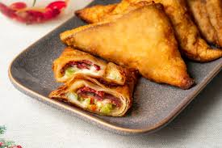
Paçanga Böreği
Çıtır yufka içerisinde bol kaşar peyniri, pastırma, domates ve biber dilimleri.
Dışı galeta unuyla kaplanmış klasik bir ara sıcak lezzeti.

Kabaklı Sebze Mücver
Rendelenmiş taze kabak, dereotu, taze soğan ve beyaz peynir ile hazırlanan hafif lezzet.
Üzerinde bir kaşık süzme yoğurt ile servis edilir.

Sebzeli Spring Rolls
İnce jülyen doğranmış çıtır mevsim sebzeleri ile doldurulmuş Uzak Doğu usulü börekler.
Yanında acı-tatlı (sweet chili) sos ile sunulur.

Çıtır Pane Mantar
Özel pane harcına bulanmış ve altın sarısı rengini alana kadar kızartılmış taze kültür mantarları.
Sarımsaklı mayonez dip sos ile birlikte.

Belçika Çikolatalı Sufle
Fırından yeni çıkmış, içi akışkan Belçika çikolatası ile dolu sıcak bir lezzet.
Üzerinde pudra şekeri ve yanında bir top vanilyalı dondurma ile servis edilir.
.jpg)
Cevizli Brownie
Yoğun kakaolu ve bol ceviz parçalı nemli brownie dilimi.
Üzerinde eritilmiş çikolata sosu ve soğuk dondurma eşliğinde sunulur.

Fıstıklı Künefe
Sıcak servis edilen, arası özel künefe peynirli çıtır kadayıf.
Bol Antep fıstığı ve tam kıvamında şerbetiyle geleneksel bir şölen.
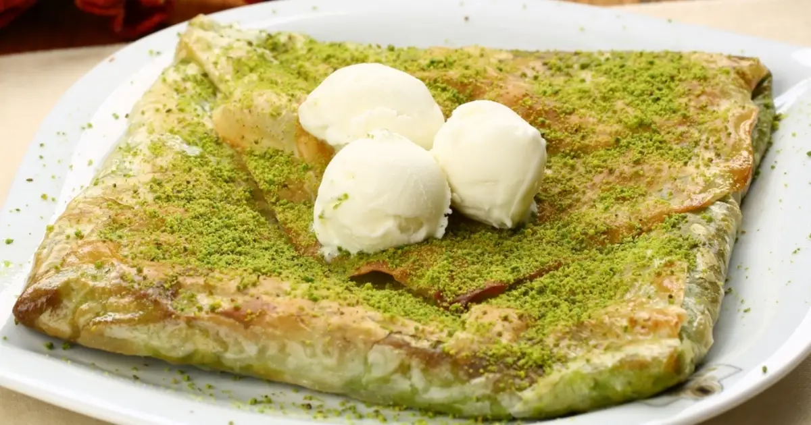
Antep Katmeri
İncecik açılmış çıtır hamur içerisinde bol kaymak, şeker ve Antep fıstığı.
Sıcak servis edilen bu hafif ve çıtır tatlıya bayılacaksınız.

Kaymaklı Ekmek Kadayıfı
Şerbetini tam çekmiş yumuşacık ekmek kadayıfı dilimi.
Arasında ve üzerinde kalın tabaka manda kaymağı ile servis edilir.
.webp)
Meyveli Magnolia
İpeksi kreması, taze çilek dilimleri ve çıtır bisküvi parçalarıyla hazırlanan hafif bir tatlı.
Hafif tatlı sevenlerin bir numaralı tercihi.

Orman Meyveli Pavlova
Dışı çıtır, içi yumuşak beze (mereng) yatağında taze krema ve üzerinde ekşi-tatlı orman meyveleri.
Görsel bir ziyafet sunan zarif bir seçenek.
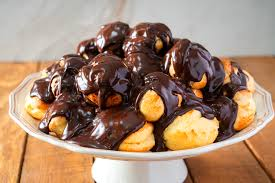
Çikolatalı Profiterol
Özel krema dolgulu yumuşak hamur topları üzerine, pürüzsüz ve yoğun Belçika çikolatalı sos dökülerek
hazırlanan bir klasik.

San Sebastian Cheesecake
İspanyol usulü yanık cheesecake; kremsi dokusu ve akışkan merkeziyle modern bir lezzet.
Yanında çikolata sosu ile servis edilebilir.
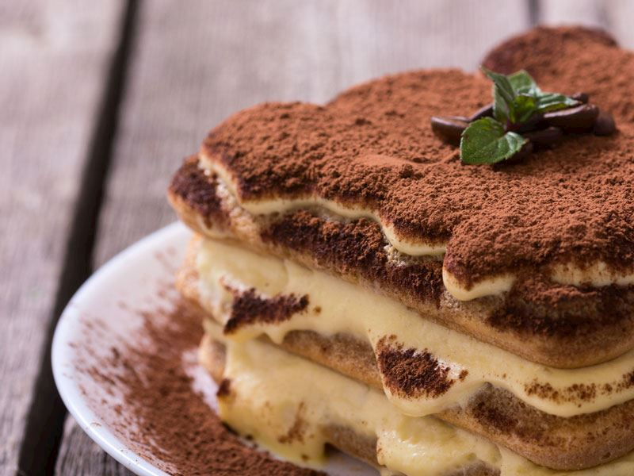
İtalyan Tiramisu
Espresso ile ıslatılmış kedi dili bisküvileri ve özel mascarpone peynirli kremasıyla
hazırlanan, kahve aromalı hafif bir İtalyan klasiği.